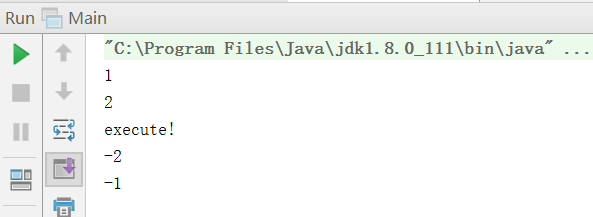

第六十六课. 声明式异常处理 实现.
先看CategoryService.java下的list方法：
我们捕获到SQLException异常以后直接将这个异常 throw(e);
而且在方法体上也写上：public List<Category> list() throws SQLException
这样就将这个异常抛了出去。
其实我们的ActionSupprot也是这么做的：
被抛出的异常交由struts2来处理，它是怎么处理的？
我们在struts.xml中加上这样的话：
这样一旦出错，就会交由struts处理，并且显示error.jsp页面
这样我们就会将编码出现异常的时候，显示一个错误提示页面了：
可以在debug中显示错误：
但是我们之前的异常映射只能映射到一种异常，但是我们的异常种类很多啊，那么怎么才能把所有异常都处理呢？
我们只需要配置一个全局的包，用来存放错误映射和结果：
然后在我们自己的包中继承这个包就可以使用这个包的错误处理了：
试一下：
是可以的！
第六十八课. 声明式异常处理 原理
看一下关于异常处理的拦截器配置：
看一下defaultStack的配置：
可以发现其中包括了一大堆拦截器的配置。第一个拦截器就是exception，我们来看一下它的代码：
看到了这个拦截器使用的类，再看一下这个类的源码：
这个类继承了AbstractInterceptor的抽象类，它又实现了Interceptor接口，这个接口中核心的拦截函数是intercept()，所以我们只需要看ExceptionMappingInterceptor中的intercept()：
其中：result = invocation.invoke();
这句话已经就调用了Action了
|
|
这句找到一系列映射，找到映射后：
然后将映射结果赋值给result：
result = mappedResult;
最后执行：this.publishException(invocation, new ExceptionHolder(var6));
publishException代码：
将exceptionHolder压到栈里。
第六十八课. DefaultActionRef_Bug
看我们以前写的一段代码（struts.xml）：
上面代码有一句：<default-action-ref name="Category_list" />
这一句配置了一个默认的action，但是我们试图去使用默认的action访问的时候，发现只会直接返回result结果，不会执行class里的Action对象方法。我们认为这是一个bug。
怎么去解决这个bug呢？
直接去web.xml中进行修改：
将原先的index.jsp改成了index
然后修改struts.xml：
|
|
第六十九课. Struts2 I18N原理
创建一个名字叫struts2_3100_I18N_Test的Java空项目
在src下创建两个配置文件：
创建一个Test.java：
getBundle中第一个参数找到开头是app的配置文件，有两个；然后由于地区是：Locale.CHINA
所以选择app_zh_CN.properties来进行显示，显示的字符串是welcome.msg，也就是HUANYIN：
但是如果把中文配置文件换成汉字，再进行测试，发现显示出现了乱码
解决办法：
在Dos下切换到我们工程的src文件夹下，然后执行jdk下native2ascii命令："c:\Program Files\Java\jdk1.8.0_111\bin\native2ascii" app_zh_CN_temp.properties app_zh_CN.properties
这样就帮我们在src下生成了一个将文字转化为UTF-8形式的ascii编码的app_zh_CN.properties
再测试：
这样就可以了
其实idea中有一个更加简单的方法，不需要每一次去命令行做转换。具体配置就是：
更改系统配置：File->Settings–>Editor–>File Encodings，选中“Transparent native-to-ascii conversion”。
这样我们直接在配置文件里写中文就可以了。
第七十课. Action级别I18N问题
由于在struts.xml中有这样一段配置：
那么我们在输入Login-input这样的action以后，就会去执行LoginAction的input方法。
LoginAction的代码：
这个类中有一个input方法，返回一个input，struts2在接收到这样的一个返回值后，会执行/admin/Login-input.jsp这个页面，代码是：
显示效果：
输入用户名和密码之后，表格提交到/admin/Login-login.jsp页面，这个页面的代码是：
从值栈中获取到了用户名并显示在前端页面上：
但是我们还想国际化，下面就来做国际化的工作。
Struts的资源文件分为三个级别：
Action-Package-App级
创建中英文资源配置文件：
|
|
在Login-input.jsp中引入标签：
这样我们设置浏览器的语言，就会自动帮我们将中文翻译成英文了。
上面这种方式是Action级别的国际化，只有一个Action可以被国际化。
包级别的不常用，命名是：package_en_US.properties
我们最常用的还是第三种方式，就是App级别的：
然后在我们的struts.xml中添加这样的句子：<constant name="struts.custom.i18n.resources" value="bbs2009"></constant>
这样配好前缀名之后，就会帮我们找到想要的资源包了。
下面想一个问题，就是如何让欢迎语句和我们传入的用户名进行组合，并国际化显示呢？
|
|
其中{0}是一个占位符，用来存放我们输入的用户名。
对Login-login.jsp进行修改：
|
|
显示语句是welcome.msg，对于占位符，设置它的值是username
这样再试一次，就可以成功显示国际化的页面了：
第七十三课. I18N 4 动态语言切换
发现将页面语言从中文转换到英文非常简单，只需要在链接后面追加一个参数：
http://127.0.0.1:8888/admin/Login-input?request_locale=en_US
这样就可以了：
而且整个session都变成了英文。
有了这个思路，我们就可以在代码中来动态切换语言了。
在action文件夹下，添加LangAction.java：
然后在struts.xml中添加针对这个Action的package：
在Login-input.jsp中添加两个链接：
这样就会在执行lang这个action的时候，在链接后面追加上request_locale=en_US或是request_locale=zh_CN
这样就可以支持在页面上动态切换中英文了：
总结：
I18N：
- I18N原理
a) ResourceBundle和Locale的概念
b) 资源文件
c) native2ascii - Struts的资源文件
a) Action-Package-App级
b) 一般只用APP
i. struts.xml custom.i18n
c) 动态语言切换
i. request_locale=en_US
第七十五课. Struts2 源码解析
第七十六课. 拦截器原理模拟
Main.java：
|
|
ActionInvocation.java:
|
|
Interceptor.java:
|
|
FirstInterceptor.java:
|
|
SecondInterceptor.java:
|
|
Action.java:
|
|
运行结果：

这样就模拟了一个拦截器的过程。
第七十七课. 自定义拦截器.
定义一个自己的拦截器(MyInterceptor.java)：
配置struts.xml文件：
这样就加入了我们的拦截器，运行一下，就会将我们程序运行的时间显示在控台上。
第七十八课. 使用token拦截器控制重复提交.
一旦有人在表单提交了一个数据，如果页面反应比较慢，用户就会不停地刷新，那么这个时候就会将已经提交的数据反复提交，就在数据库插入了多条重复数据，这样是不正确的。
struts2 token 使用说明
使用token标签的时候，Struts2会建立一个GUID（全局唯一的字符串）放在session中，并且会成为一个hidden放在form中。
token拦截器会判断客户端form提交的token和session中保存的session是否equals。如果equals则执行Action。否则拦截器直接返回invaid.token结果，Action对应的方法也不会执行
1.首先我们在jsp页面上导入struts标签库
<%@ taglib uri="/struts-tags" prefix="s" %>
2.在表单中添加
3.添加了
|
|
4.在struts.xml中配置token的拦截
注意：
1.这里需要些两个拦截器，默认的defaultStack要在上面，token在下面，为了能是所有拦截器有效
2.这个
3.要在这个
这样我们反复提交的时候就会返回错误界面：
第八十课. 类型转换
类型转换
a) 默认转换
i. 日期处理
b) 写自己的转换器：
第一种：
第二种：
c) 三种注册方式：
i. 局部：XXXAction-conversion.properties
- p（属性名称） = converter
ii. 全局：xwork-conversion.properties - com.xxx.XXX（类名）= converter
iii. Annotation
d) 如果遇到非常麻烦的映射转换
i. request.setAttribute();
ii. session
test.jsp里面这么写：
TestAction里面这么写：
链接这么写：
第八十四课. 总结
- Action
a) namespace（掌握）
b) path（掌握）
c) DMI（掌握）
d) wildcard（掌握）
e)接收参数（掌握前两种）
f)访问request等（掌握Map IOC方式）
g)简单数据验证（掌握addFieldError和<s:fieldError） - Result
a)结果类型（掌握四种，重点两种）
b)全局结果（掌握）
c)动态结果（了解） - OGNL表达式（精通）
a) # % $ - Struts标签
a)掌握常用的 - 声明式异常处理（了解）
- I18N（了解）
- CRUD的过程（最重要是设计与规划）（精通）
- Interceptor的原理（掌握）
- 类型转换（掌握默认，了解自定义）